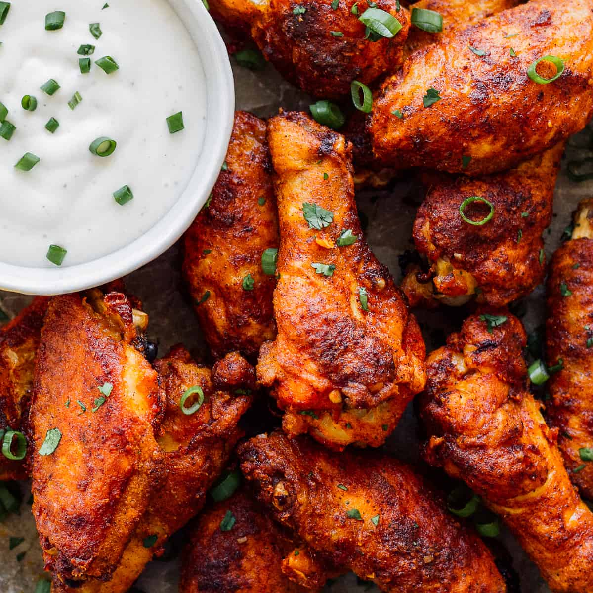
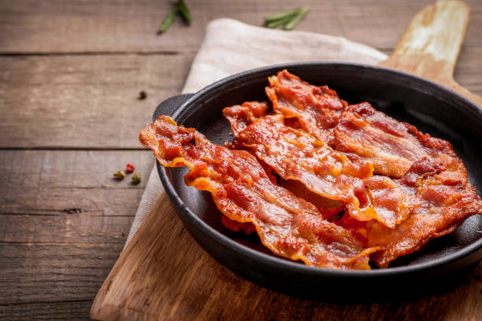

Kimchi
Kimchi is a traditional Korean dish whose components can vary but usually include some combination of vegetables, garlic, ginger, chili peppers, salt, and fish sauce.
Bulgogi
Bulgogi, or Korean beef barbecue, is undoubtedly one of the most quintessentially Korean dishes there are: gorgeously thin slices of ribeye, tenderloin, or sirloin marinated in a savory-sweet sauce and quickly cooked over flame. Bul, meaning "fire," and gogi, meaning "meat,"

Pepper Lunch
Kimchi is a traditional Korean dish whose components can vary but usually include some combination of vegetables, garlic, ginger, chili peppers, salt, and fish sauce.

Adobo
Adobo is the closest thing to a national dish in the Philippines, consisting of seared and browned chunks of meat, seafood, fruit, or vegetables mixed with white vinegar or soy sauce (or both), bay leaves, garlic, salt, sugar, oil, and black pepper.

Chicken Wings
A Buffalo wing in American cuisine is an unbreaded chicken wing section (flat or drumette) that is generally deep-fried and then coated or dipped in a sauce consisting of a vinegar-based cayenne pepper hot sauce and melted butter prior to serving.

Sisig
Sisig is a Filipino dish made from parts of a pig's face and belly, and chicken liver which is usually seasoned with calamansi, onions, and chili peppers. It originates from the Pampanga region in Luzon.

Bacon
Bacon is a type of salt-cured pork made from various cuts, typically the belly or less fatty parts of the back. It is eaten as a side dish (particularly in breakfasts), used as a central ingredient (e.g., the bacon, lettuce, and tomato sandwich (BLT)), or as a flavouring or accent (as in bacon bits in a salad).

Burger
A hamburger, or simply burger, is a food consisting of fillings—usually a patty of ground meat, typically beef—placed inside a sliced bun or bread roll. Hamburgers are often served with cheese, lettuce, tomato, onion, pickles, bacon, or chilis; condiments such as ketchup, mustard, mayonnaise, relish, or a "special sauce", often a variation of Thousand Island dressing; and are frequently placed on sesame seed buns.

Pizza
Pizza is a dish of Italian origin consisting of a usually round, flat base of leavened wheat-based dough topped with tomatoes, cheese, and often various other ingredients (such as various types of sausage, anchovies, mushrooms, onions, olives, vegetables, meat, ham, etc.), which is then baked at a high temperature, traditionally in a wood-fired oven. A small pizza is sometimes called a pizzetta.

Boiled Egg
Boiled eggs are eggs, typically from a chicken, cooked with their shells unbroken, usually by immersion in boiling water. Hard-boiled eggs are cooked so that the egg white and egg yolk both solidify, while soft-boiled eggs may leave the yolk, and sometimes the white, at least partially liquid and raw.

Grilled Beef
The high heat of grilling sears the surface of beef, creating tender meat with a flavorful crust. The required cooking temperature and the method of grilling (direct, indirect, or a combination) depends on the cut of beef and the quality of the meat.

Sinigang na Baboy
Sinigang is a Filipino soup or stew characterized by its sour and savory taste. It is most often associated with tamarind (Filipino: sampalok), although it can use other sour fruits and leaves as the souring agent. It is one of the more popular dishes in Filipino cuisine.